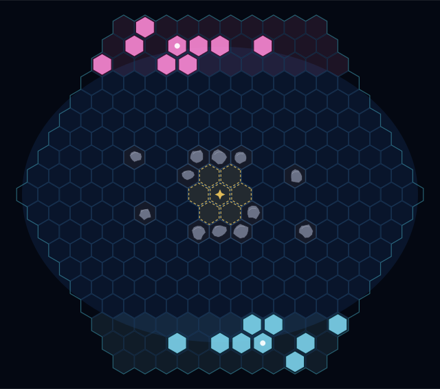
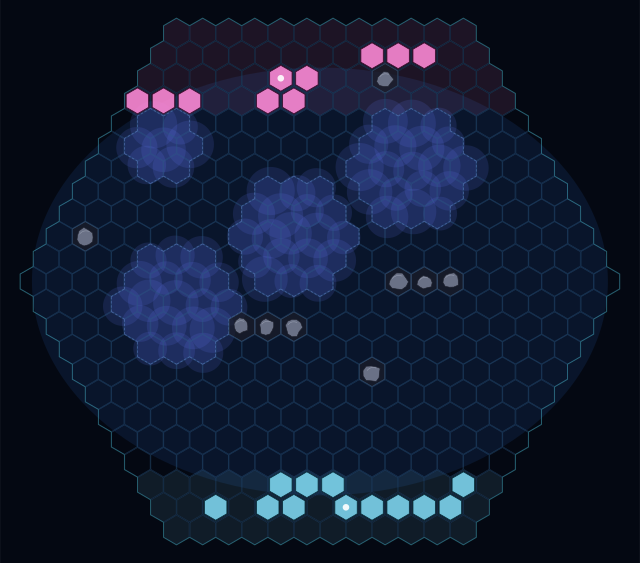
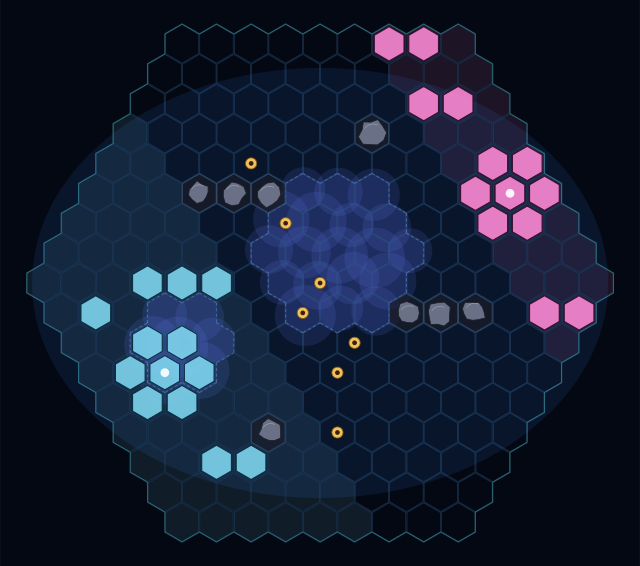
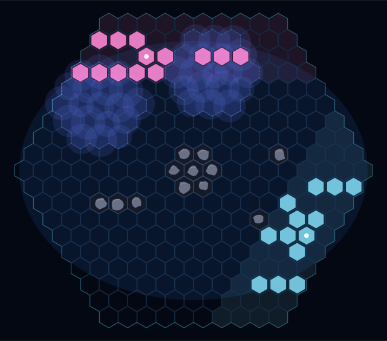
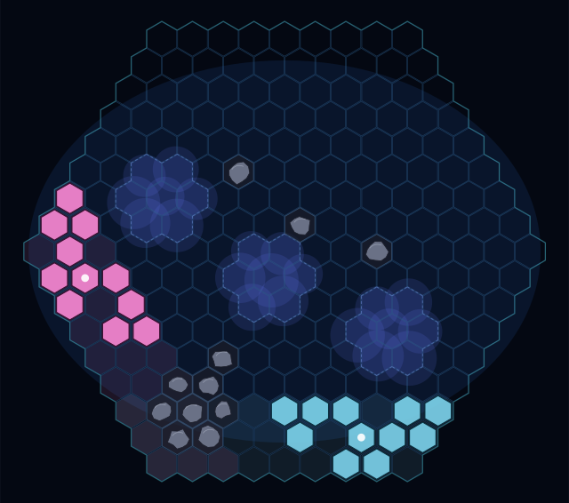
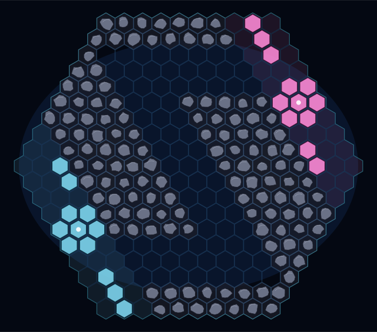

Ten boards to try
Open the field manual: how to play, every ship part and the rules in plain words.
You are player 1; the computer is player 2. Boards are listed from easiest to hardest, with First Light first so you can learn the controls. Each board is a file in rules/boards/: edit it and reload. To play a friend by pasted codes, open the board, choose a seat in the game's own menu and send the game code; your friend does not need this page.
1 First LightMediumThe smallest board: a quick, even duel to learn the controls. A flagship and a gunboat each, with five rocks to hide behind.Try: step a hex before you fire; fire from a rock edge so only one of them has a line on you.
2
First LightMediumThe smallest board: a quick, even duel to learn the controls. A flagship and a gunboat each, with five rocks to hide behind.Try: step a hex before you fire; fire from a rock edge so only one of them has a line on you.
2
Beacon HillEasyA beacon sits in a rock crater with two openings. Hold it through the other side's turn to score; five points wins.Try: cover both openings and the enemy holder is a sitting duck.
3
Cat and MouseEasyYou hunt a hidden stealth fleet on the biggest board. You have three Comets: they fly far, and light up everything nearby when they die.Try: a Comet is meant to be lost. Have your guns close to where it will die.
4
Fog BankEasyYou defend, outgunned two to one, from behind a fog bank you have mined. Fight from behind your mines and let them come to you.Try: show a ship just beyond a mine and let them come through it.
5 Pawn StormEasySix one-laser skiffs close in on a dreadnought in a cage of rock. It can only chase one of you; two shots on the same segment in one turn get through its shield.Try: come in under cover, then two skiffs on the same segment in one turn, from opposite sides.
6
Pawn StormEasySix one-laser skiffs close in on a dreadnought in a cage of rock. It can only chase one of you; two shots on the same segment in one turn get through its shield.Try: come in under cover, then two skiffs on the same segment in one turn, from opposite sides.
6
The GambitMediumHidden snipers wait with a boat that fires three missiles at the first ship it sees. You have three Lures: feed one to the salvo, then strike.Try: feed the salvo a Lure, then strike while it reloads.
7
King's GuardMediumChess from the side: each flagship is an unarmed king. Hold the corner with one ship and send the rest the long way to their king.Try: hold the corner with one ship; send the rest round to their king.
8
The DoglegMediumA canyon with two right-angle bends. No laser sees round a corner, so send a drone first, then fight where they must step into your line.Try: send a drone round the bend first, then fight where they must step into your line.
9 The MinefieldHardAn open field of invisible mines lies between you and their dug-in fleet. Lead with the minesweeper, and look for the one clean lane.Try: lead with the Dowser; it sees a sleeper mine from 2 hexes. Stop and shoot it. One lane is clean.
10
The MinefieldHardAn open field of invisible mines lies between you and their dug-in fleet. Lead with the minesweeper, and look for the one clean lane.Try: lead with the Dowser; it sees a sleeper mine from 2 hexes. Stop and shoot it. One lane is clean.
10 Missile AlleyHardA long, narrow alley. You have many missiles; they have point defence and a shield on every ship, and nowhere to spread out.Try: three missiles on one ship in one round; the blast hits the ship beside it too.
Missile AlleyHardA long, narrow alley. You have many missiles; they have point defence and a shield on every ship, and nowhere to spread out.Try: three missiles on one ship in one round; the blast hits the ship beside it too.
Ship types, the thinking behind each board and what the quick simulations showed: docs/ships-and-boards.md and docs/maps-rework.md.